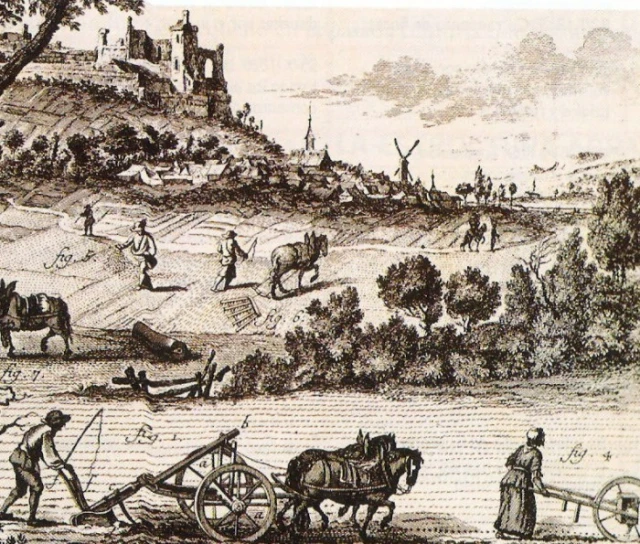
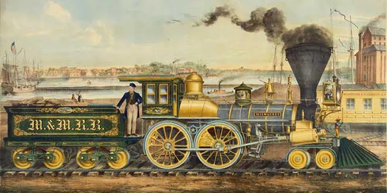
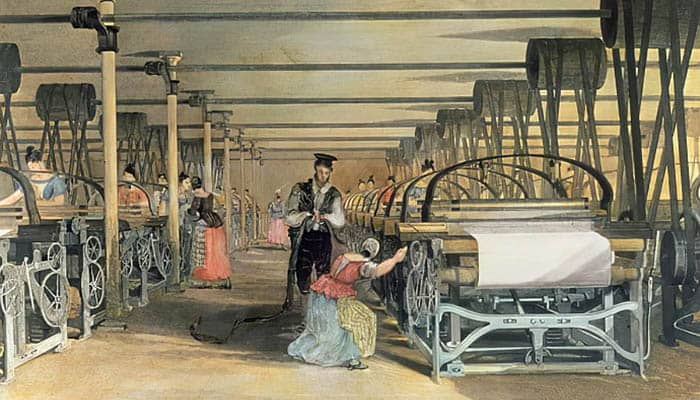
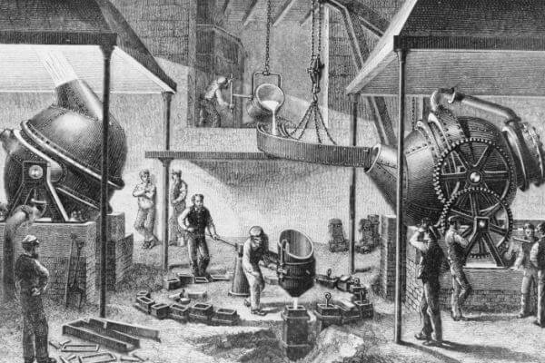
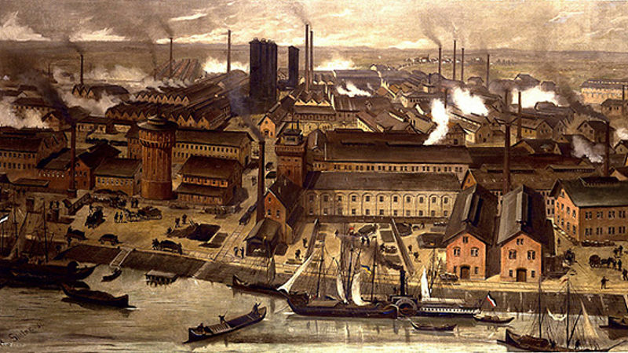
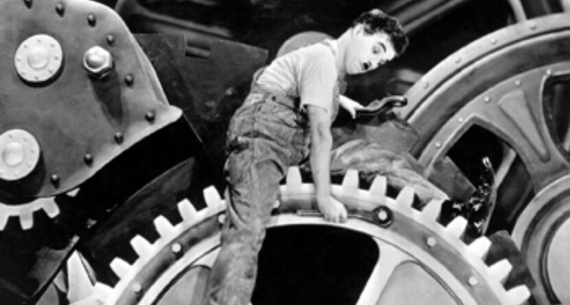
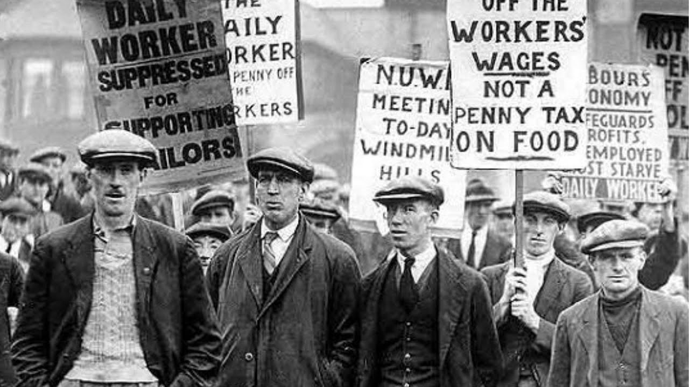

La Revolución Industrial

La Revolución Industrial fue un período de grandes cambios en la economía y sociedad que comenzó a finales del siglo XVIII en el Reino Unido y se extendió por Europa, Estados Unidos y otras partes del mundo. Este período marcó la transición de una economía agraria y artesanal a una economía industrial y mecanizada.
Antecedentes
Antes de la Revolución Industrial, la mayoría de las personas vivían en áreas rurales y trabajaban en agricultura. Las herramientas eran simples, y el trabajo se realizaba principalmente a mano. Sin embargo, los avances en la tecnología y la ciencia llevaron al desarrollo de máquinas que cambiaron la forma de producir bienes.
Innovaciones
Entre las principales innovaciones de la Revolución Industrial se destacan la máquina de vapor, desarrollada por James Watt, y los telares mecánicos, que transformaron la industria textil. También se inventaron nuevas técnicas para la producción de hierro y acero, esenciales para la construcción de máquinas y edificios.
 Impacto en la sociedad
La Revolución Industrial tuvo un profundo impacto en la sociedad. Las personas comenzaron a migrar a las ciudades en busca de empleo en las fábricas, lo que provocó un rápido crecimiento urbano. Sin embargo, las condiciones de trabajo eran duras, y muchos trabajadores enfrentaban largas jornadas laborales en entornos inseguros.
Legado
La Revolución Industrial cambió el mundo de manera irreversible, sentando las bases para la economía moderna. Aunque también trajo desafíos como la explotación laboral y el impacto ambiental, sus avances tecnológicos han sido fundamentales para el desarrollo de la sociedad actual.
